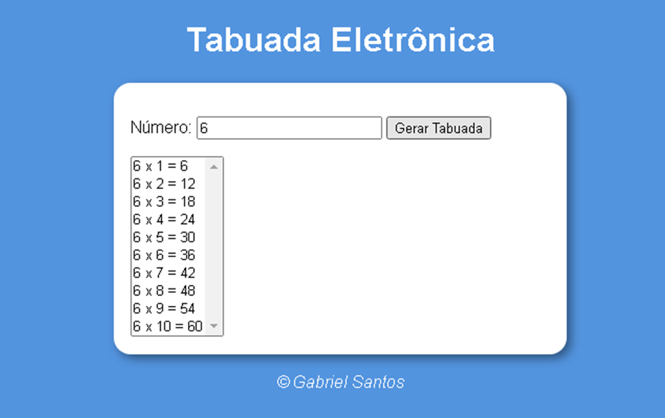

Tabuada
 Idealizado para efetuar multiplicações, este exercício foi feito para treinar minha lógica de programação em javascript com mentoria do Professor Guanabara - Curso em Vídeo.

Idealizado para efetuar multiplicações, este exercício foi feito para treinar minha lógica de programação em javascript com mentoria do Professor Guanabara - Curso em Vídeo.
Feito em javascript é possivel analisar os intervalos a partir de dados numéricos inseridos.
Um sistema feito em javascript onde pode-se analisar informações com os dados inseridos e obter um breve relatório.

Após 1 mês e mais alguns dias estudando consegui elaborar um simples projeto estudando pela plataforma do curso em vídeo. Neste projeto utilizei HTML semântico, imagens dinâmicas, links externos, carreguei vídeos externos e a estilização por conta do CSS com classes e pseudo classes, técnica de shorthand para economizar linhas no código, variáveis e um pouco de responsividade.
Gostei muito pois coloquei em prática tudo o que aprendi.

Projeto criado com mentoria do professor Guanabara feito pela plataforma do Curso em Video com o efeito Paralax, nesse trabalho chamado de Projeto Cordel, coloquei em pratica tudo o que aprendi em HTML e CSS, utilizando Background-image para realizar o efeito paralax.